Services · Trent's Trick Upholstery
One seat or the whole cabin.
Everything below comes out of the shop in Baltimore, Ohio. Not sure where your job fits? Call (740) 808-2727 and describe it – or bring the seat in.

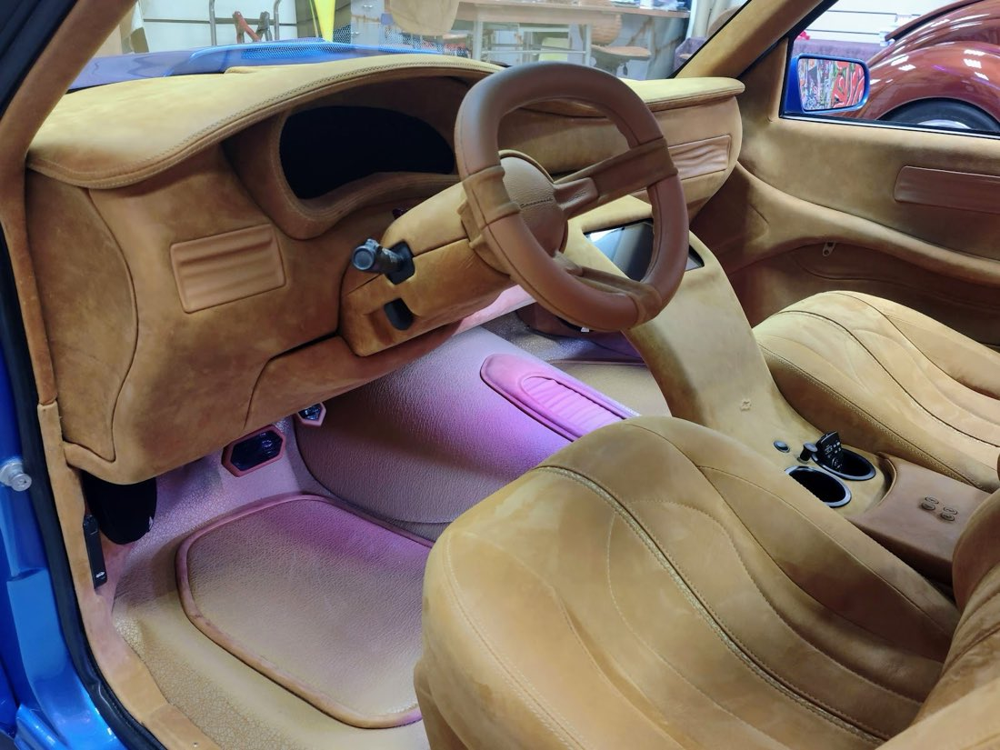
Custom & hot rod interiors
Complete interiors designed around the car – seats, panels, dash, kick panels and trunk in one material story. The shop has built interiors for SEMA Show vehicles since 2001.
- Hot rods, street rods and customs
- Classic and muscle cars
- Show builds, start to finish
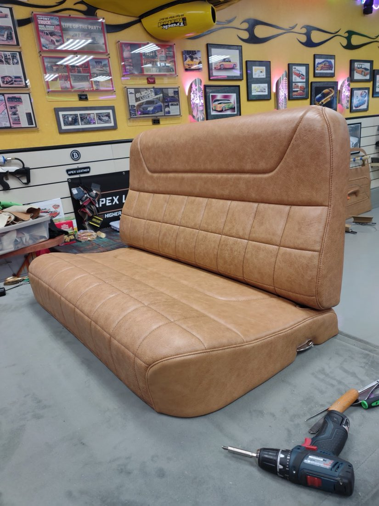

Seats – recovered, rebuilt, repaired
New covers and foam, custom stitch patterns, or just a repair. One customer's Subaru Forester seat had “gone soft” from a broken frame weld – the dealer would replace the seat; Trent repaired the frame in two places instead.
- Bench and bucket seats
- Leather, piping and diamond stitching
- Seat frame repair
- Seats can come in on their own, out of the car
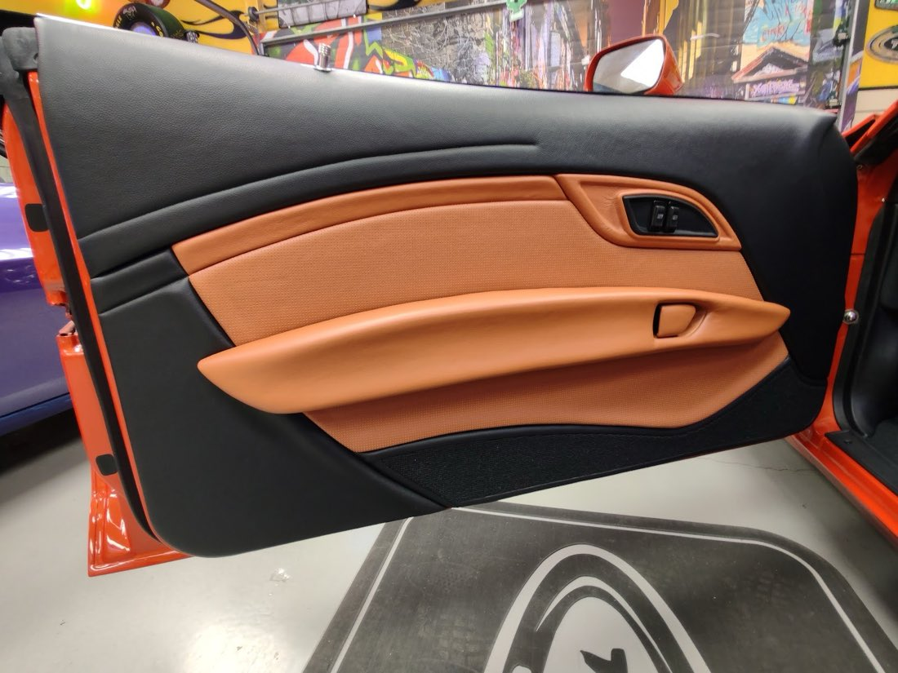
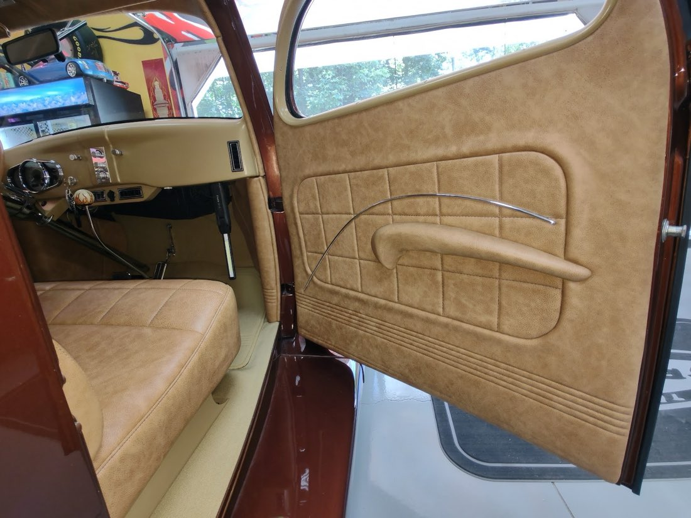
Door panels, dashes & headliners
Sculpted, two-tone or stitched door panels, wrapped dashes and headliners made to match the seats – the details that make an interior look built rather than bought.
- Sculpted and two-tone door panels
- Dash and console wraps
- Headliners
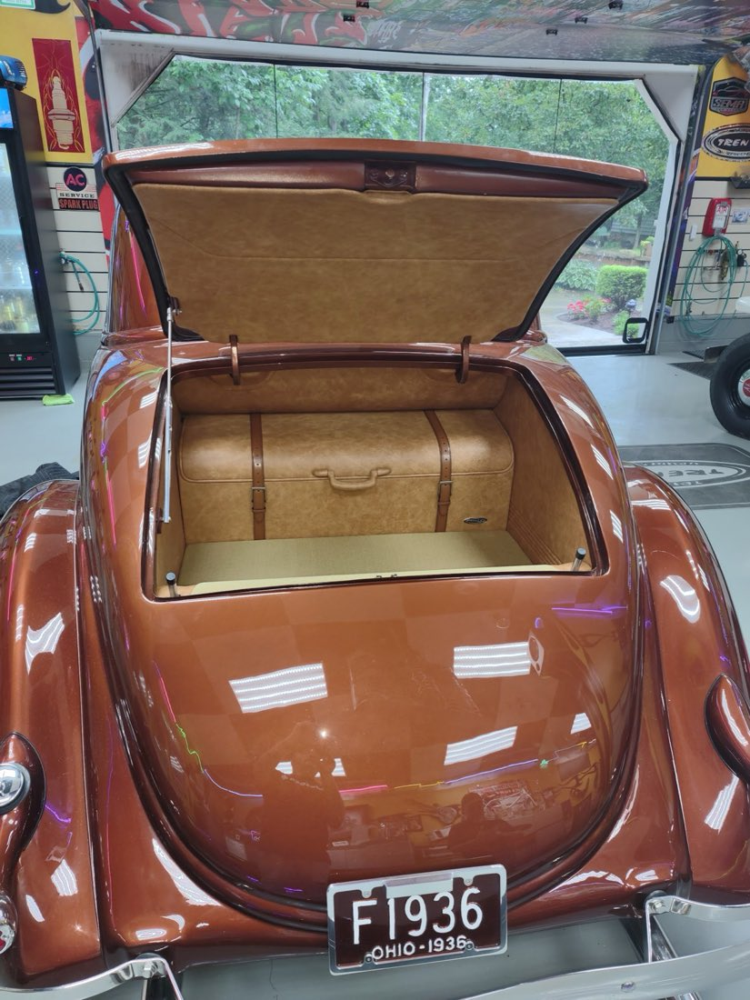

Trunks & cargo areas
A trunk finished like the cabin: lined, carpeted and fitted – down to a suitcase covered to match, as on the 1936 coupe and the Beetle shown here.
- Trunk linings and carpet
- Fitted cases and covers
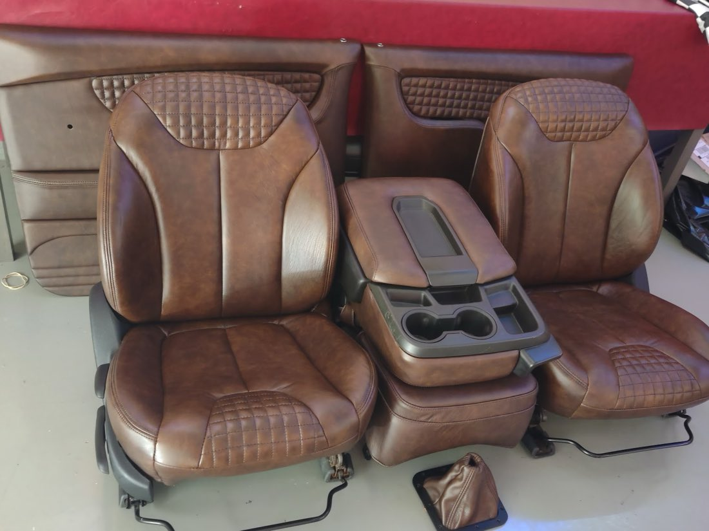
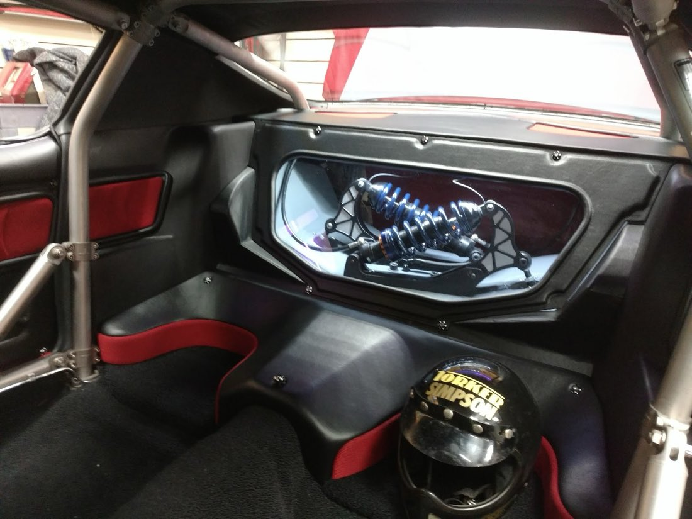
Trucks, Jeeps & race cars
Truck seats and consoles, Jeep seats and race-car interiors finished around the cage. In 2014 the shop's work on the Extreme Sport F-150 project truck with A.R.E. Accessories earned a top-10 Mothers Choice Award at the SEMA Show.
- Truck seats, consoles and interiors
- Jeep seats
- Race car interiors
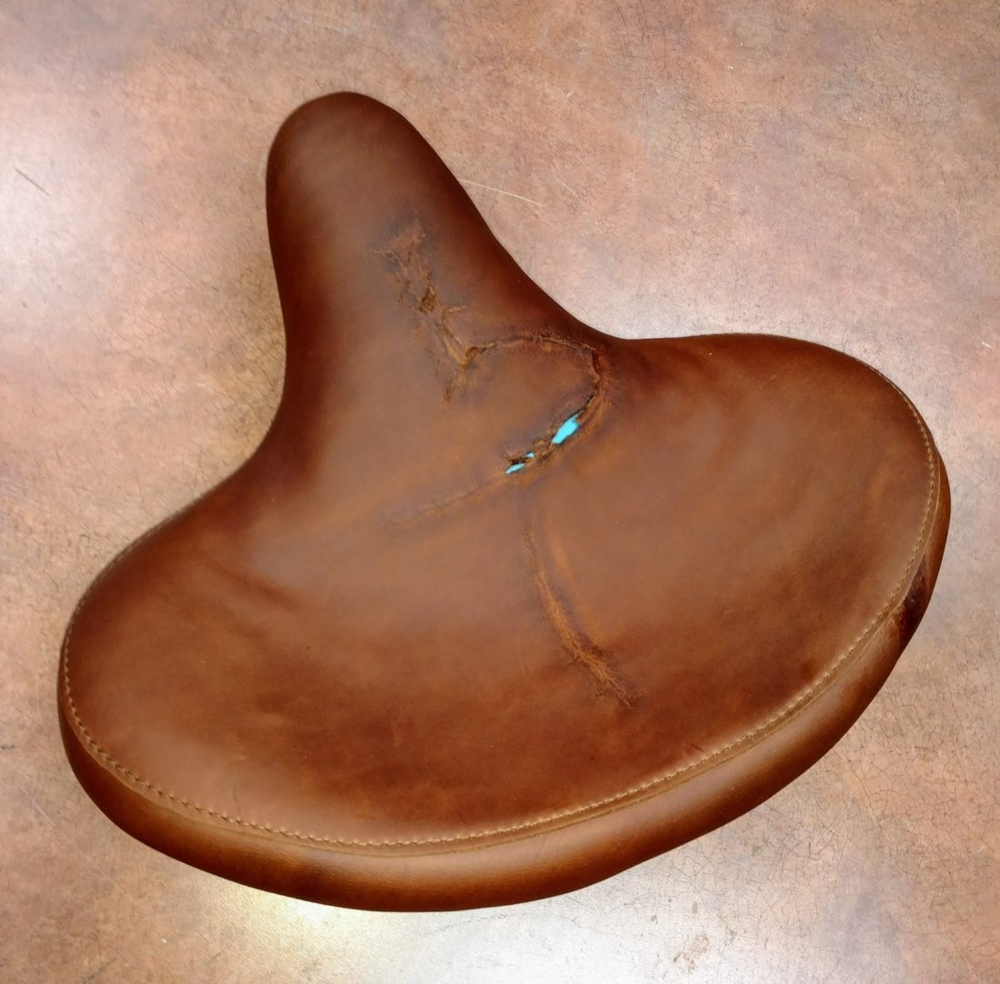

Motorcycle seats & saddlebags
Seats, saddlebags, pouches and tank bibs. For one Harley-Davidson Heritage Softail Classic, the shop built new bags, seats, a front pouch and a gas tank bib in bomber brown with tan piping to pick up the pinstripe.
- Motorcycle seats
- Saddlebags, pouches and tank bibs
More from the shop
Cars that came through the door.
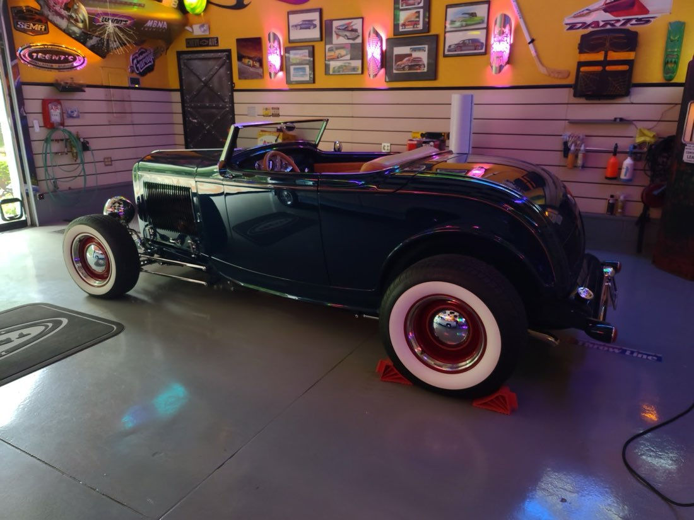
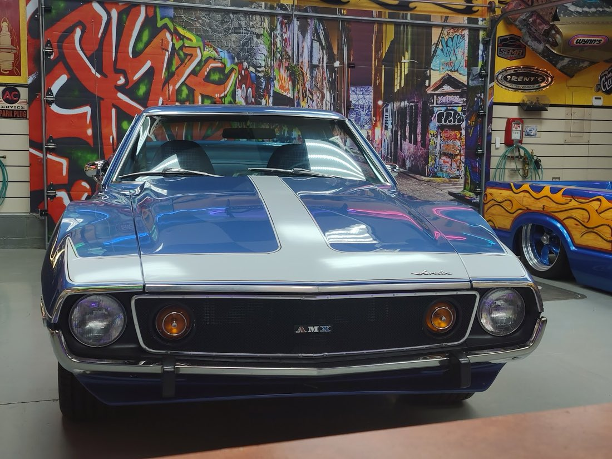
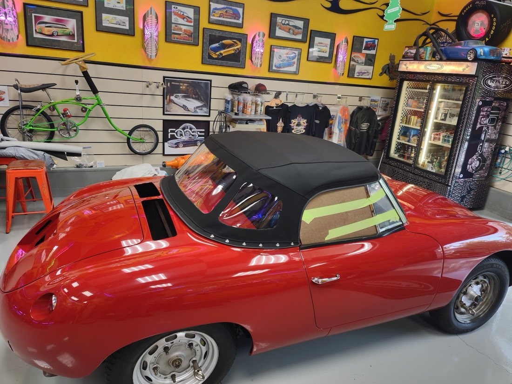
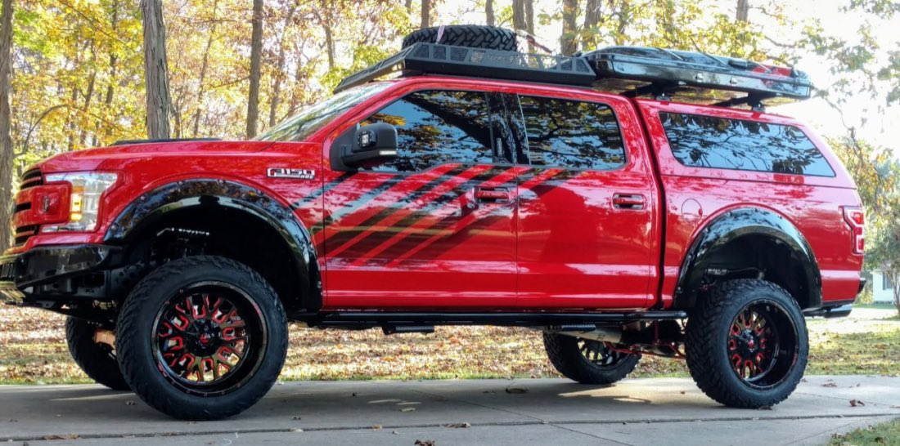
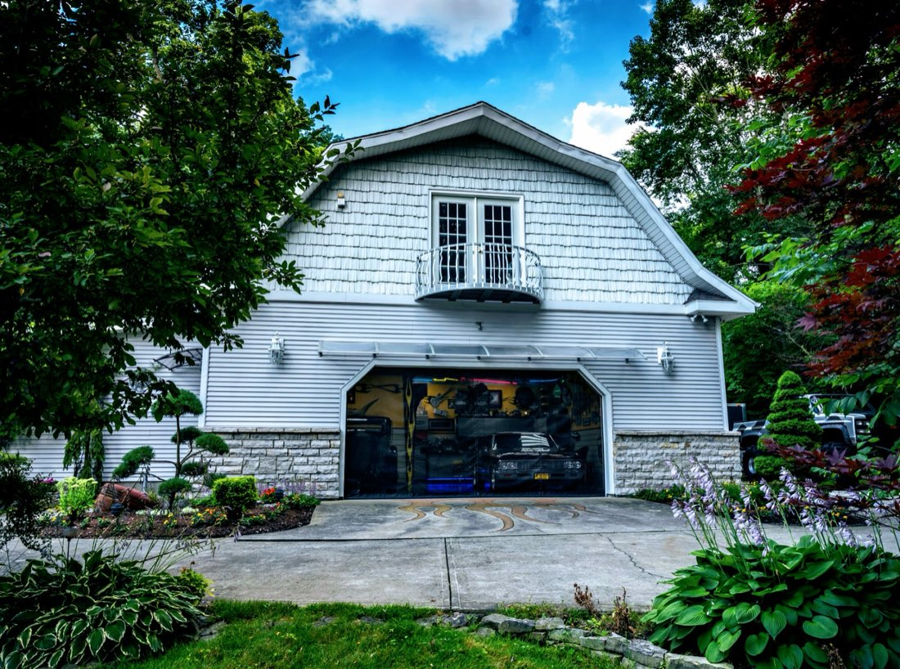

Got a project in the garage?
Tell Trent what you have and what you'd like it to be. Mon–Sat, call ahead before you stop by.
Call (740) 808-2727